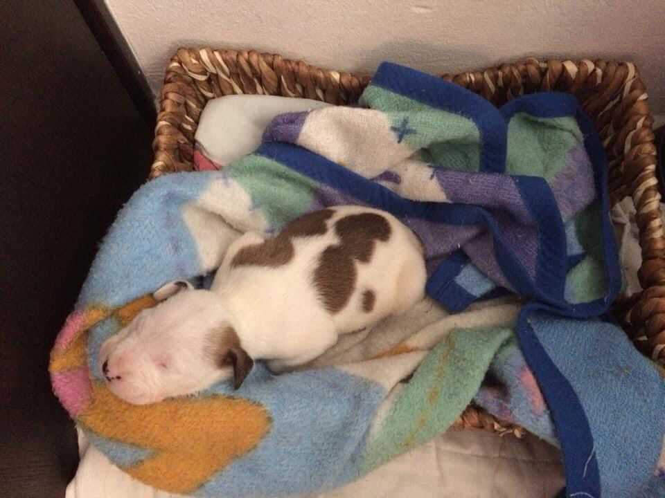
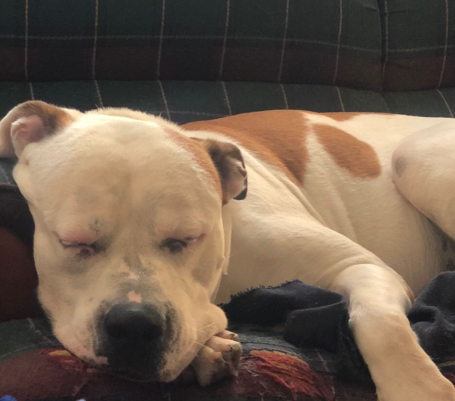

Nombre de mi mascota: ROCKO :)
Descripción: Es un perro pitbull de 5 años, mide aproximandamente menos de medio metro. Es blanco con manchas cafes y un cara tierna.
Historia: Rocko llegó a nuestras vidas como un angelito, llegó a los pocos días de nacido siendo muy adorable!!
Actividades Favoritas: Comer y dormir Zzz
Salud y cuidado: Se alimenta bien (tambien come parte de la comida de sus dueños) y se baña regularmente
Curiosidades: A veces sueña que persigue algo, no le gusta el pescado ni el pollo sin cocer, duerme con su mama humana a veces.
Comida favorita: Pancakes (el pan en general)